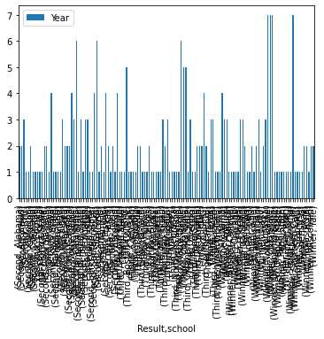
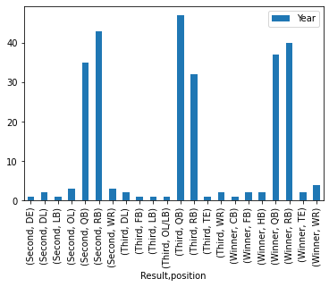
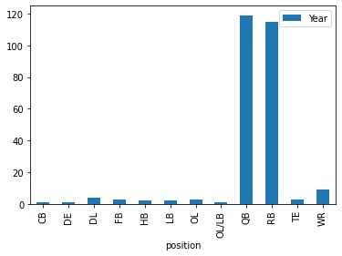

import pandas as pdodf = pd.read_html('https://www.ncaa.com/news/football/article/2022-12-10/heisman-trophy-winners-and-runners-each-year-1935')[0]odf.columnsIndex(['Year', 'WINNER', '2nd', '3rd'], dtype='object')odf.columns = ['Year', 'Winner', 'Second', 'Third']odf.head()| Year | Winner | Second | Third | |
|---|---|---|---|---|
| 0 | 1935 | Jay Berwanger - RB, Chicago | Monk Meyer - RB, Army | Bill Shakespeare - RB, Notre Dame |
| 1 | 1936 | Larry Kelley - TE, Yale | Sam Francis - RB, Nebraska | Ray Buivid - RB, Marquette |
| 2 | 1937 | Clinton Frank - HB, Yale | Byron White - RB, Colorado | Marshall Goldberg - RB, Pittsburgh |
| 3 | 1938 | Davey O’Brien - QB, TCU | Marshall Goldberg - RB, Pittsburgh | Sid Luckman - QB, Columbia |
| 4 | 1939 | Nile Kinnick - RB, Iowa | Tom Harmon - RB, Michigan | Paul Christman - QB, Missouri |
df = odf.set_index('Year').stack().reset_index()df.head()| Year | level_1 | 0 | player | |
|---|---|---|---|---|
| 0 | 1935 | Winner | Jay Berwanger - RB, Chicago | Jay Berwanger |
| 1 | 1935 | Second | Monk Meyer - RB, Army | Monk Meyer |
| 2 | 1935 | Third | Bill Shakespeare - RB, Notre Dame | Bill Shakespeare |
| 3 | 1936 | Winner | Larry Kelley - TE, Yale | Larry Kelley |
| 4 | 1936 | Second | Sam Francis - RB, Nebraska | Sam Francis |
df['player'] = df[0].str.split(' - ').str.get(0).str.strip()df['position'] = df[0].str.split(' - ').str.get(1).str.split(', ').str.get(0).str.strip()df['school'] = df[0].str.split(' - ').str.get(1).str.split(', ').str.get(1).str.strip()df.head()| Year | level_1 | 0 | player | position | school | |
|---|---|---|---|---|---|---|
| 0 | 1935 | Winner | Jay Berwanger - RB, Chicago | Jay Berwanger | RB | Chicago |
| 1 | 1935 | Second | Monk Meyer - RB, Army | Monk Meyer | RB | Army |
| 2 | 1935 | Third | Bill Shakespeare - RB, Notre Dame | Bill Shakespeare | RB | Notre Dame |
| 3 | 1936 | Winner | Larry Kelley - TE, Yale | Larry Kelley | TE | Yale |
| 4 | 1936 | Second | Sam Francis - RB, Nebraska | Sam Francis | RB | Nebraska |
df.columns = ['year', 'result', "original_text", 'player', 'position', 'school']df.to_csv("heisman_top_three.csv", index=False)df.groupby(["Result", 'school']).count()[['Year']].plot.bar()<AxesSubplot:xlabel='Result,school'>
df.groupby(["Result", 'position']).count()[['Year']].plot.bar()<AxesSubplot:xlabel='Result,position'>
df.groupby(['position']).count()[['Year']].plot.bar()<AxesSubplot:xlabel='position'>